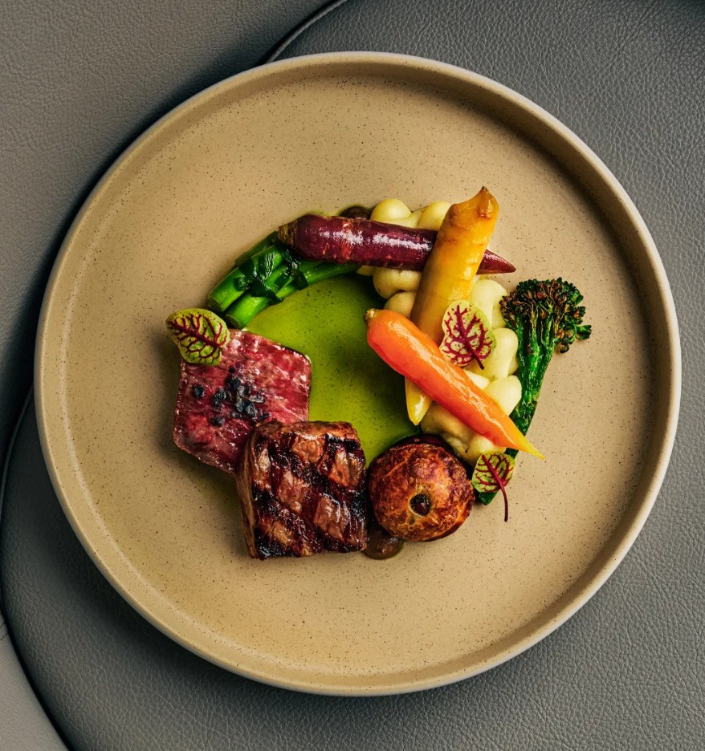

Ottawa Fine Dining
Ottawa doesn't have a Michelin Guide. But if inspectors showed up tomorrow, they'd find a city punching well above its weight. Here are the Ottawa restaurants that would turn heads.
There is no menu. No choices. Just a modernist tasting experience that changes constantly and executes at a level that would be remarkable in any city. Atelier has been doing this for over a decade — the consistency alone is Michelin's primary criteria.
Quiet, precise, and completely self-assured. Stofa operates in Wellington West without fanfare, which is exactly the kind of restaurant Michelin inspectors tend to find first. Technical cooking with genuine point of view.
Refined Canadian cuisine rooted in seasonality. Aiana brings a clarity of vision to Ottawa's fine dining scene that feels new and necessary.
Chef Briana Kim's fermentation-driven tasting menu is one of the most distinctive culinary voices in the city. Intimate, considered, and building momentum fast.
Inventive Canadian cooking with bold flavours and a neighbourhood feel. Fauna proves you don't need white tablecloths to cook at a Michelin level.
Elevated brasserie cooking with the kind of capital-city polish that makes it a natural fit for the Guide's Bib Gourmand at minimum — and possibly more.
Toronto has Michelin stars. Vancouver has Michelin stars. Québec has Michelin stars. Ottawa has all the ingredients — the talent, the ambition, the dining public — and is overdue for recognition.